AWS LAMP with IAM, RDS, EC2, S3, EFS, and AMI
Contents
Introduction
This demonstration expands the typical LAMP (Linux, Apache, MySQL, PHP) Stack to use AWS features to increase redundancy and resiliency.
-
EFS --
All files and directories are redundantly stored within and across multiple Availability Zones in a region to prevent the loss of data from the failure of any single component. The distributed architecture of Amazon EFS provides data protection from an AZ outage, system and component failures, and network connection errors.
-
S3 --
Objects are redundantly stored on multiple devices across multiple facilities in an Amazon S3 region. Amazon S3 also regularly verifies the integrity of data stored using checksums. If Amazon S3 detects data corruption, it is repaired using redundant data. In addition, Amazon S3 calculates checksums on all network traffic to detect corruption of data packets when storing or retrieving data.
-
RDS --
When you provision a Multi-AZ DB Instance, Amazon RDS automatically creates a primary DB Instance and synchronously replicates the data to a standby instance in a different Availability Zone (AZ). Each AZ runs on its own physically distinct, independent infrastructure, and is engineered to be highly reliable. In case of an infrastructure failure, Amazon RDS performs an automatic failover to the standby, so that you can resume database operations as soon as the failover is complete. Since the endpoint for your DB Instance remains the same after a failover, your application can resume database operation without the need for manual administrative intervention.
Although the code in this example is relatively simple, the same mechanisms can be used for sites using CMS systems like Drupal or Wordpress.
When OIT provision an account in AWS, we create a Main VPC (virtual private cloud) divided into a number of subnets. We categorize those subnets as follows:
- Public - resources placed in these subnets are accessible from the Internet.
- Private - resources placed in these subnets have Internet access via NAT (network address translation) but are not visible from the Internet.
- Data - resources placed in these subnets have no access to or from the Internet.
More than one subnet is created in each category, and are placed in different availability zones (AZs). An Availability Zone is an AWS data center (or group of data centers) that is geographically isolated from other AZs in a Region.
Glossary
RDS
Amazon Relational Database Service (Amazon RDS) makes it easy to set up, operate, and scale a relational database in the cloud. It provides cost-efficient and resizable capacity while automating time-consuming administration tasks such as hardware provisioning, database setup, patching and backups. It frees you to focus on your applications so you can give them the fast performance, high availability, security and compatibility they need. [https://aws.amazon.com/rds/]
EC2
Amazon Elastic Compute Cloud (Amazon EC2) is a web service that provides secure, resizable compute capacity in the cloud. [https://aws.amazon.com/ec2/]
S3
Amazon Simple Storage Service (Amazon S3) is the largest and most performant, secure, and feature-rich object storage service. With Amazon S3, organizations of all sizes and industries can store any amount of data for any use case, including applications, IoT, data lakes, analytics, backup and restore, archive, and disaster recovery. Amazon S3 is designed for 99.999999999% durability to protect data from site-level failures, errors, and threats, so that it is available to your end users and applications at all times. [https://aws.amazon.com/s3/]
EFS
Amazon Elastic File System (Amazon EFS) provides a simple, scalable, elastic file system for Linux-based workloads for use with AWS Cloud services and on-premises resources. It is built to scale on demand to petabytes without disrupting applications, growing and shrinking automatically as you add and remove files, so your applications have the storage they need – when they need it. It is designed to provide massively parallel shared access to thousands of Amazon EC2 instances, enabling your applications to achieve high levels of aggregate throughput and IOPS with consistent low latencies. Amazon EFS is a fully managed service that requires no changes to your existing applications and tools, providing access through a standard file system interface for seamless integration. [https://aws.amazon.com/efs/]
IAM
AWS Identity and Access Management (IAM) enables you to manage access to AWS services and resources securely. Using IAM, you can create and manage AWS users and groups, and use permissions to allow and deny their access to AWS resources. [https://aws.amazon.com/iam/]
Step 1. Create Security Groups in the Main VPC
In order for traffic to reach our resources, we need to create two security groups. ( We are placing our resources in the Main VPC; make sure when creating your Security Groups they are also created in the Main VPC)
- Create a Security Group with port 22 [SSH] access from BYU and port 80 [HTTP] access from anywhere.

- Create a Self Referencing Security Group with port 3306 [MYSQL/Aurora] and port 2049 [NFS] access.
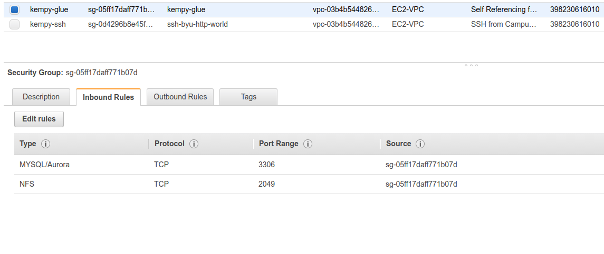
Security Group inbound rules can be thought of as 1) WHAT are we giving access to, and 2) WHO are we giving that access to.
We will add the Self Referencing group to our EFS Mount and our DB Instance because they have the WHAT.
We will add it to our EC2 instances to make them the WHO.
Step 2. Create an EFS Mount in the Main VPC
EFS is a Network File System (NFS) that we can attach to as many virtual machines (EC2 instances) as we need. This will enable all of our EC2 instances to operate off of the same code base.
Create the EFS in the same subnets as the EC2 instances that will use it. ( In our case, the two Public subnets)
Attach the Self Referencing Security Group.
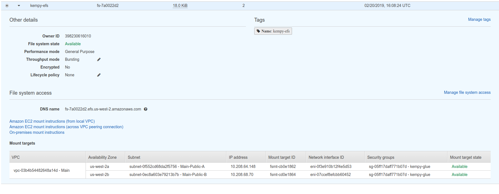
Step 3. Create a Public S3 Bucket
Our code will take uploaded files and store them and reference them from an S3 Bucket.
- Create an S3 Bucket named kempy-bootcamp-bucket ( S3 Bucket names must be unique throughout all AWS)
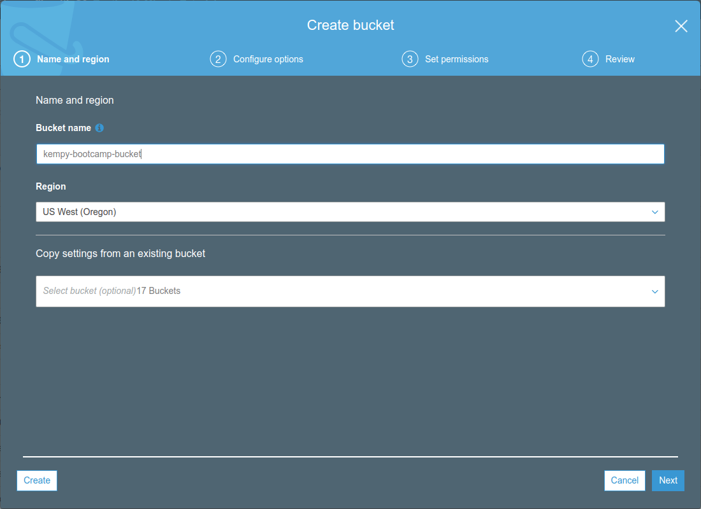
- Turn off the Public blocks ( We need it to be a Public Bucket)
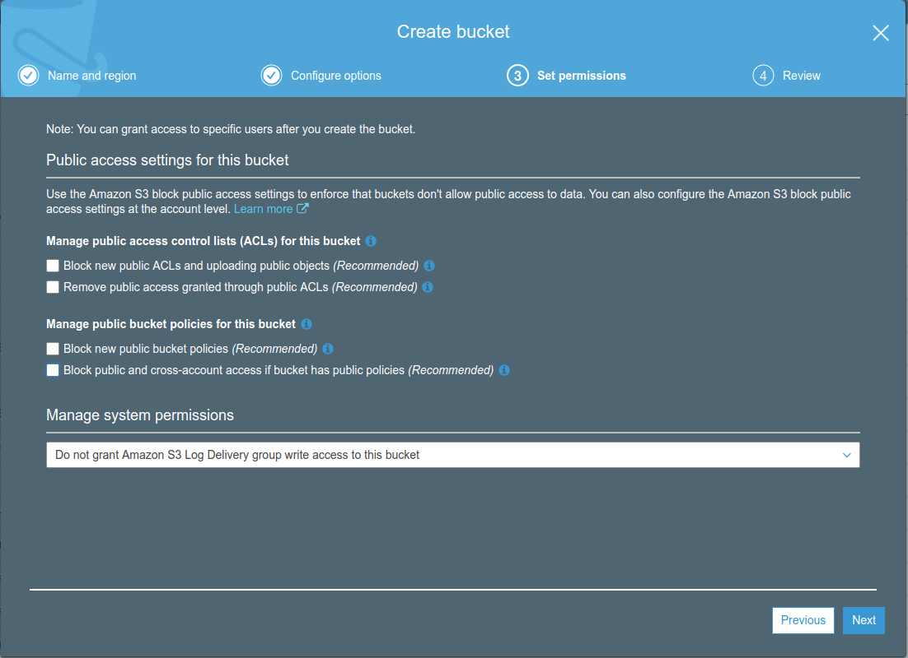
- Add a public read access policy
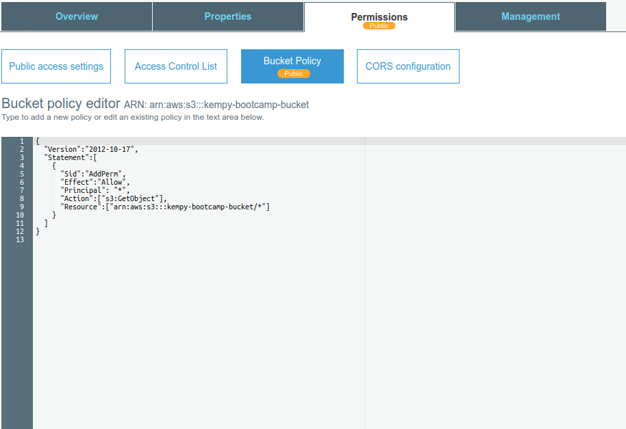
{
"Version":"2012-10-17",
"Statement":[
{
"Sid":"AddPerm",
"Effect":"Allow",
"Principal": "*",
"Action":["s3:GetObject"],
"Resource":["arn:aws:s3:::kempy-bootcamp-bucket/*"]
}
]
}
Step 4. Create an IAM Role for EC2 to access S3
Uploading to an S3 bucket requires permissions. These permissions can be granted by creating an IAM User and hard coding the user keys into our application. A more secure way of granting this access is
by creating an S3 Access Role and attaching that role to our EC2 instances.
- Create an IAM Role kempy-s3-access
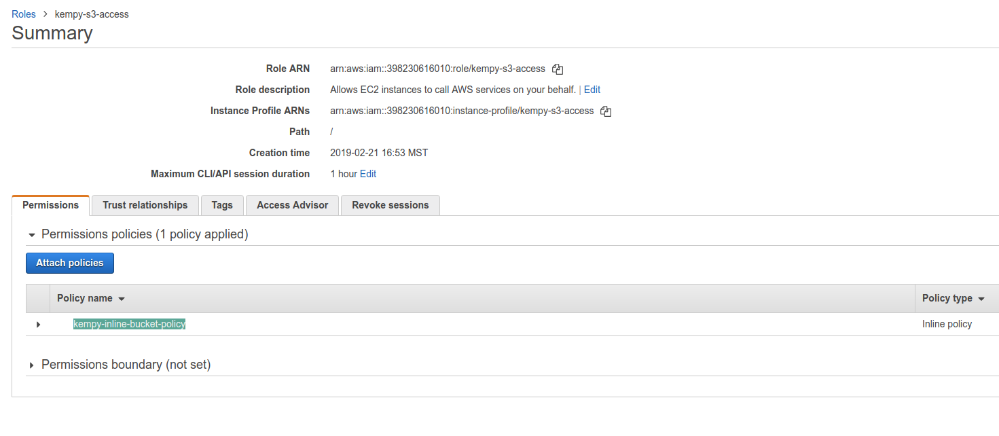
- Attach an inline policy (kempy-inline-bucket-policy) with access to our S3 Bucket
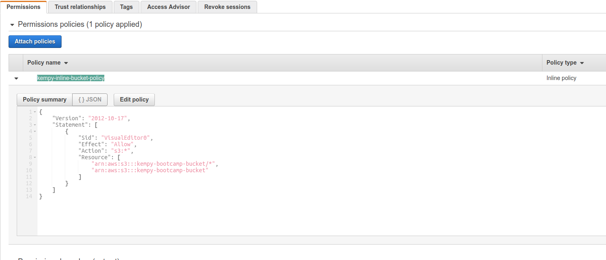
{
"Version": "2012-10-17",
"Statement": [
{
"Sid": "VisualEditor0",
"Effect": "Allow",
"Action": "s3:*",
"Resource": [
"arn:aws:s3:::kempy-bootcamp-bucket/*",
"arn:aws:s3:::kempy-bootcamp-bucket"
]
}
]
}
Step 5. Create a MySQL RDS Database
- Create a MySQL DB with a replica in a different AZ
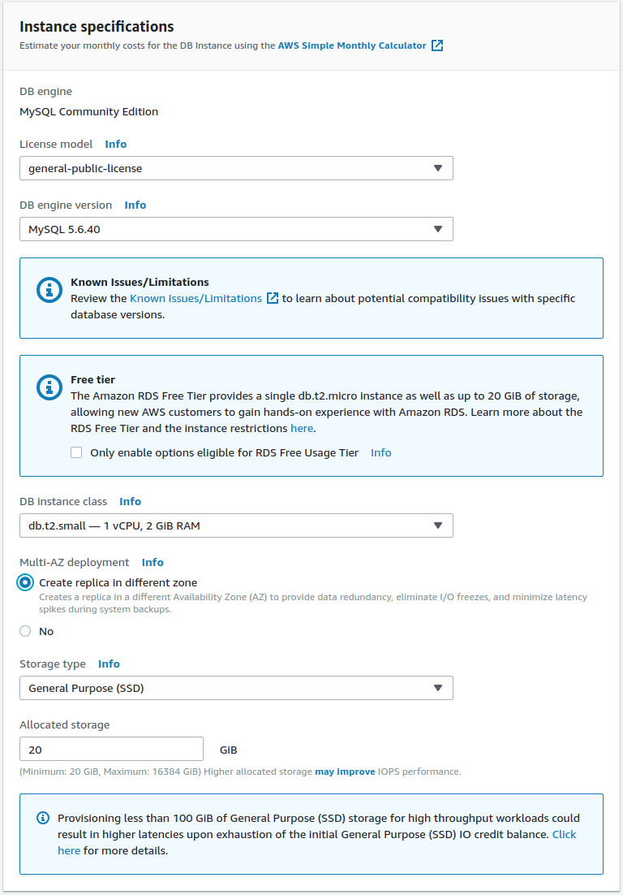
- Name the DB Instance and create a master username and password
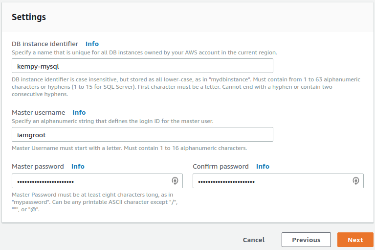
- Place our DB Instance in the Main VPC in the main-db-subnet-group. Attach the Self Referencing Security Group.
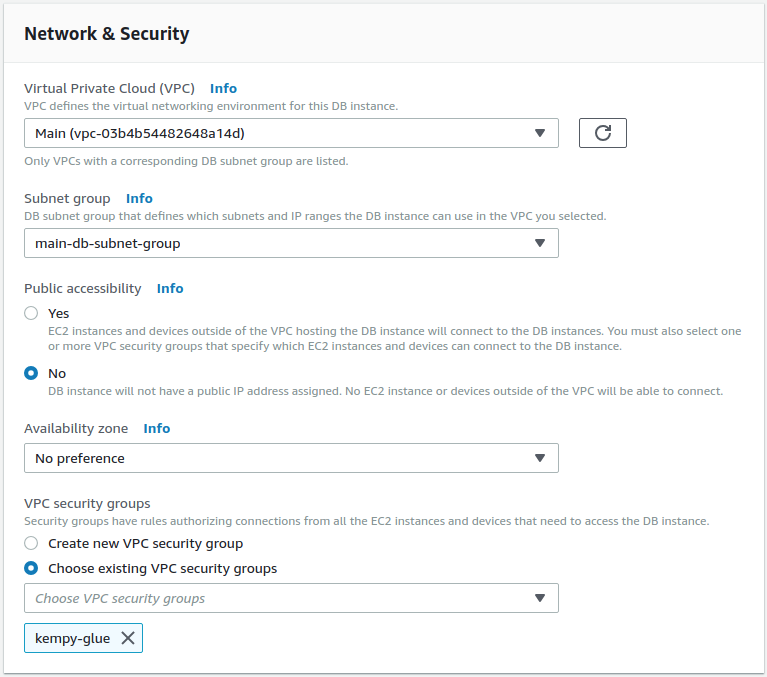
- Once the instance is created, take note of the instance end-point. [kempy-mysql.crzc9xds3qkq.us-west-2.rds.amazonaws.com]
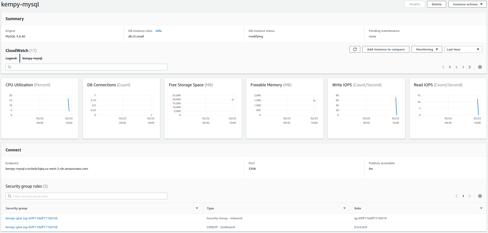
Step 6. Create an EC2 Instance
I came across a few gotchas when creating the EC2 instance; mainly due to the AWS PHP SDK (the code used by PHP to connect with AWS resources via their API).
The most up-to-date SDK requires at least PHP 5.5, but the first AMI (Amazon Machine Images) I used defaulted to PHP 5.4.
- Launch an EC2 Instance (from a PHP 5.5 compatible AMI) [Amazon Linux AMI 2018.03.0 (HVM), SSD Volume Type - ami-01e24be29428c15b2]
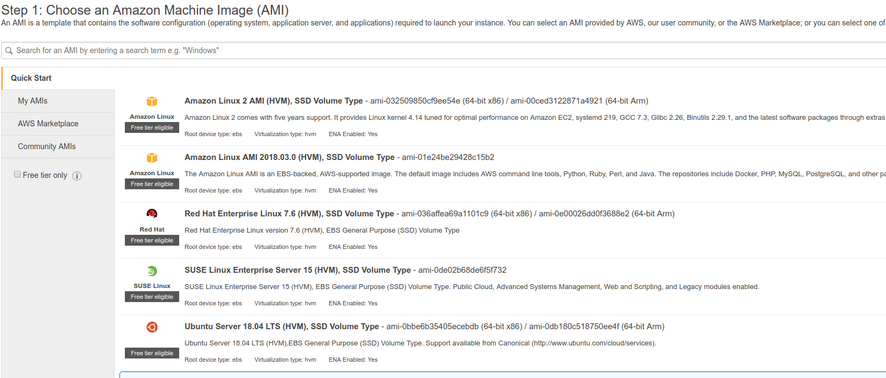
- Add it to a Public Subnet in the Main VPC
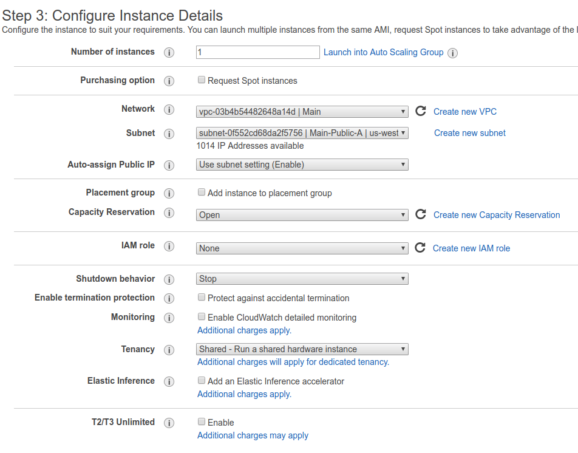
- Add the Security Group we created earlier - we'll also need to attach the 2nd security group (the self referencing one) but can only attach one when we create the instance.
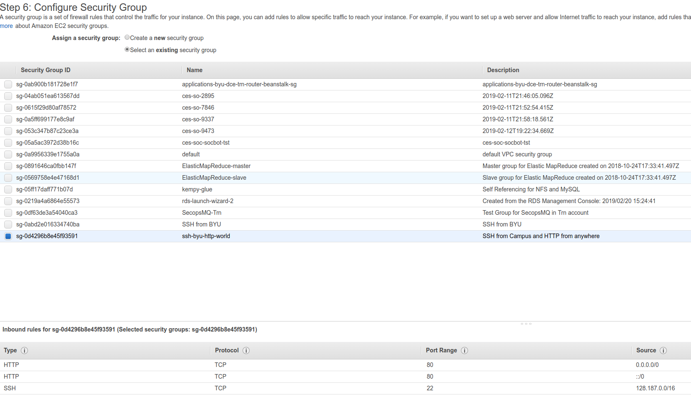
- Attach the Self Referencing Security Group
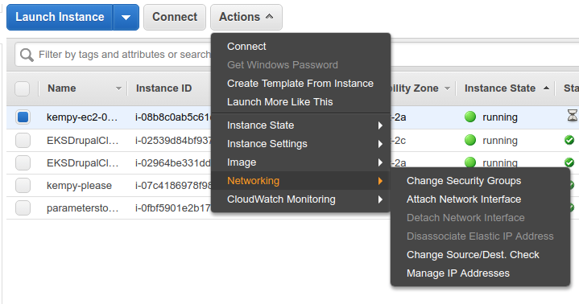
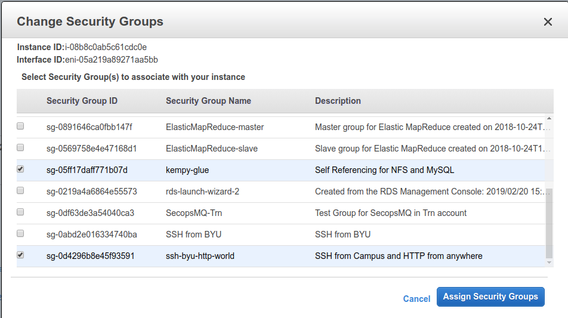
- Attach the IAM Role
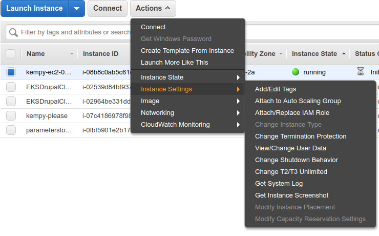
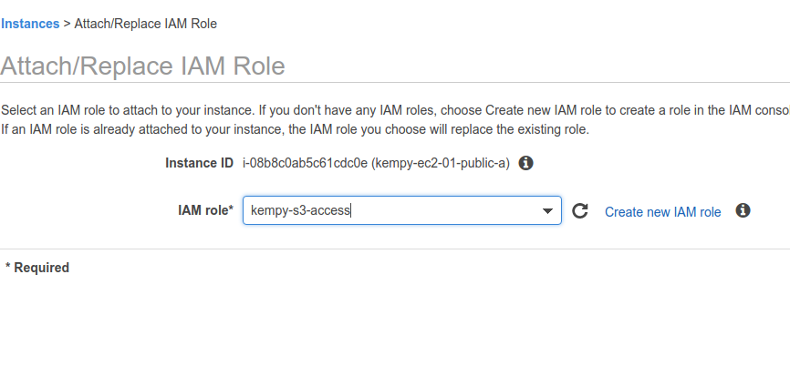
Step 7. Configure the EC2 Instance
- Update the instance and install the required software - Apache (httpd), PHP 5.5, MySQL (to access our database)
sudo yum update -y
sudo yum -y install httpd24
sudo yum -y install php55 php55-mysqlnd php55-xml php55-mcrypt php55-mbstring php55-cli php55-gd
sudo yum -y install mysql
sudo chkconfig httpd on
sudo service httpd start
- Connect to MySQL RDS Instance and create a database, database user, and a table for our application.
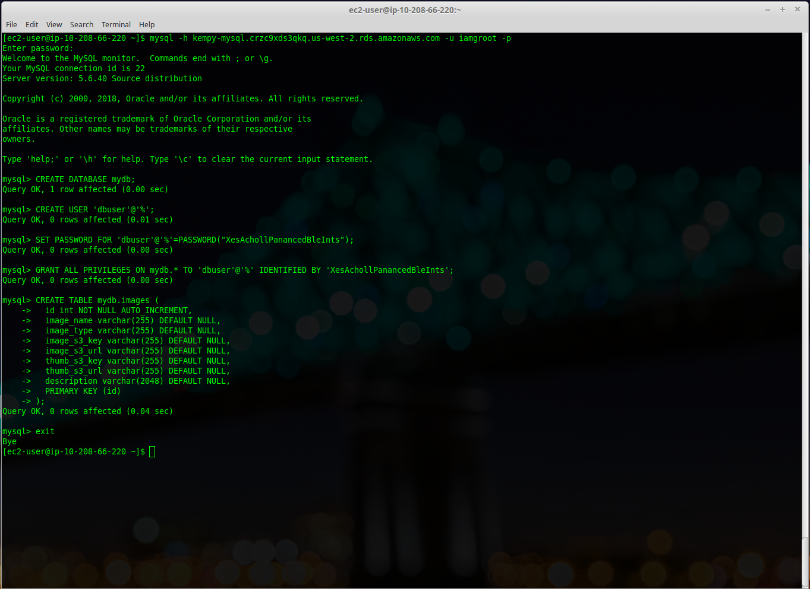
mysql -h kempy-mysql.crzc9xds3qkq.us-west-2.rds.amazonaws.com -u iamgroot -p
CREATE DATABASE mydb;
CREATE USER 'dbuser'@'%';
SET PASSWORD FOR 'dbuser'@'%'=PASSWORD("XesAchollPanancedBleInts");
GRANT ALL PRIVILEGES ON mydb.* TO 'dbuser'@'%' IDENTIFIED BY 'XesAchollPanancedBleInts';
CREATE TABLE mydb.images (
id int NOT NULL AUTO_INCREMENT,
image_name varchar(255) DEFAULT NULL,
image_type varchar(255) DEFAULT NULL,
image_s3_key varchar(255) DEFAULT NULL,
image_s3_url varchar(255) DEFAULT NULL,
thumb_s3_key varchar(255) DEFAULT NULL,
thumb_s3_url varchar(255) DEFAULT NULL,
description varchar(2048) DEFAULT NULL,
PRIMARY KEY (id)
);
- Create a new group and add the ec2-user user to it. Change the ownership of the web (/var/www) directory.
sudo groupadd web
sudo usermod -a -G web ec2-user
sudo chown -R apache:web /var/www
sudo find /var/www -type d -exec chmod u=rwx,g=rwxs,o=xr '{}' \;
sudo find /var/www -type f -exec chmod u=rw,g=rw,o=r '{}' \;
- Mount the EFS file system at the web root /var/www/html
sudo yum install -y amazon-efs-utils
sudo mount -t efs fs-7a0022d2:/ /var/www/html
#Add the mount to the fstab to allow persistence on reboots
sudo vim /etc/fstab
#Add the following line to the fstab
fs-7a0022d2:/ /var/www/html efs defaults,_netdev 0 0
- Install Composer, and use it to install the AWS SDK PHP
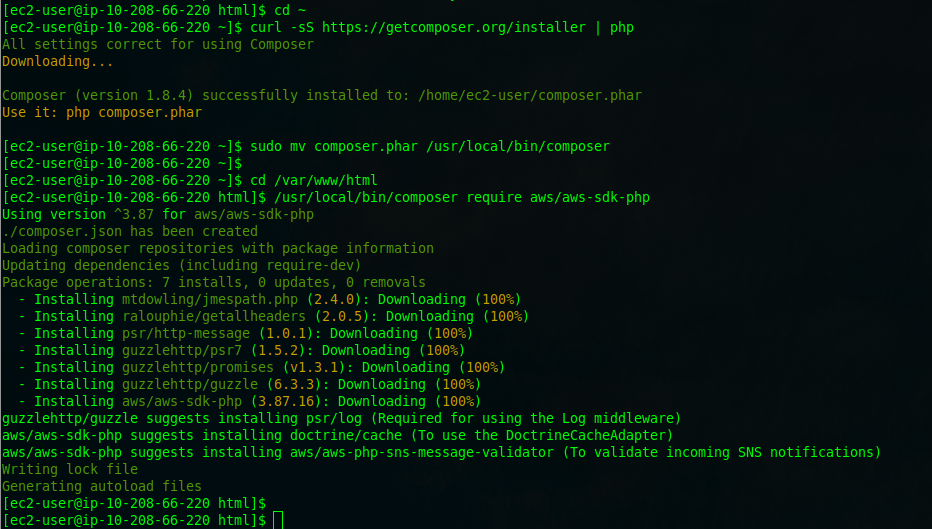
cd ~
curl -sS https://getcomposer.org/installer | php
sudo mv composer.phar /usr/local/bin/composer
cd /var/www/html
/usr/local/bin/composer require aws/aws-sdk-php
- Edit the php.ini file to allow for bigger file uploads
sudo vim /etc/php.ini
# Edit the following lines
upload_max_filesize = 32M
post_max_size = 32M
sudo service httpd restart
- Upload
index.php and
upload.php
to the /var/www/html diectory. Create an 'images' folder as a temporary storage location for the images we upload.

- Test at http://ec2-34-217-206-91.us-west-2.compute.amazonaws.com/ ( will be deleted after the Bootcamp)
Step 8. Launch a new EC2 Instance from AMI
Now we have an EC2 Instance set up the way we want it, we can use it to create duplicates. This is a best practice for reducing mean time to recovery (MTTR).
- Create an Image from our EC2 Instance
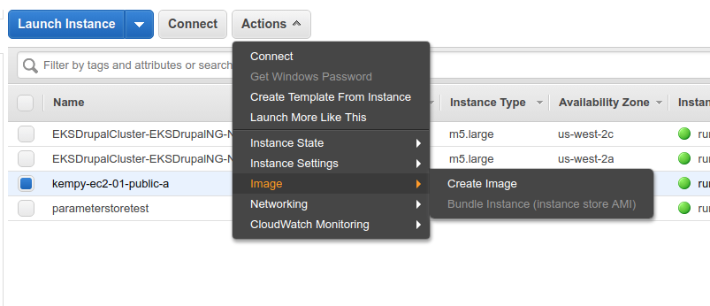
- Give it a name
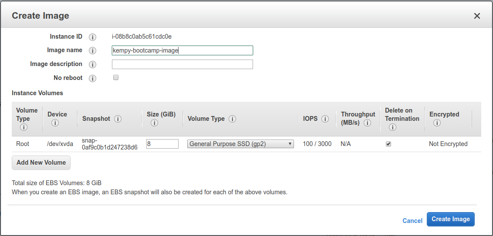
- Launch a new EC2 Instance from the AMI we just created
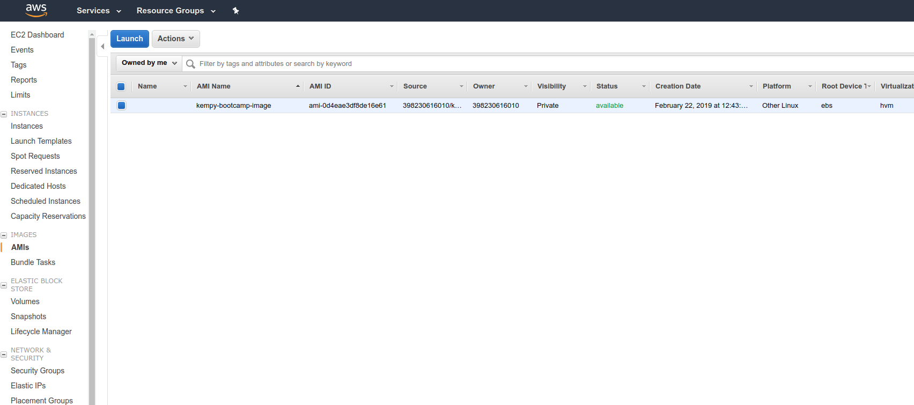
- Add it to the Main VPC and Public Subnet. Once the instance has initialized, add the Self Referencing Security Group and IAM Role.
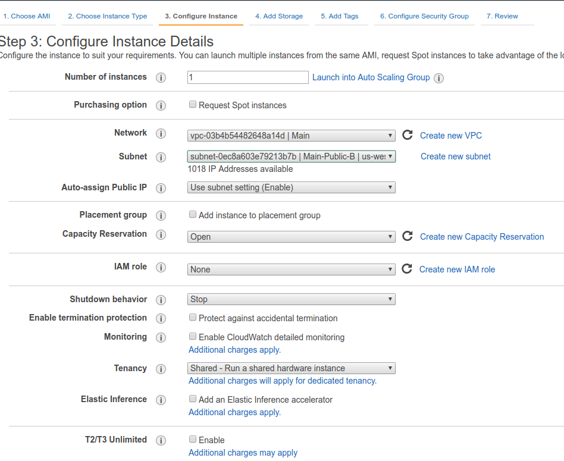
- Test the new EC2 at http://ec2-52-12-15-153.us-west-2.compute.amazonaws.com/ ( will be deleted after the Bootcamp)
Conclusion
In this example, we set up 2 EC2 instances in Public facing subnets. If we were to create this in a production environment, we could further protect our web servers by placing them in the Private subnet, and directing traffic to them via a Load Balancer in the public subnet.
In this way, the Load Balancer could monitor the health of our EC2 instances and redirect traffic as needed.
{kind=link}
{kind=link}
{kind=link}
{kind=link}
{kind=link}
{kind=link}
{kind=link}
{kind=link}
{kind=link}
{kind=link}
{kind=link}
{kind=link}
{kind=link}
{kind=link}
{kind=link}
{kind=link}
{kind=link}
{kind=link}
{kind=link}
{kind=link}
{kind=link}
{kind=link}
{kind=link}
{kind=link}